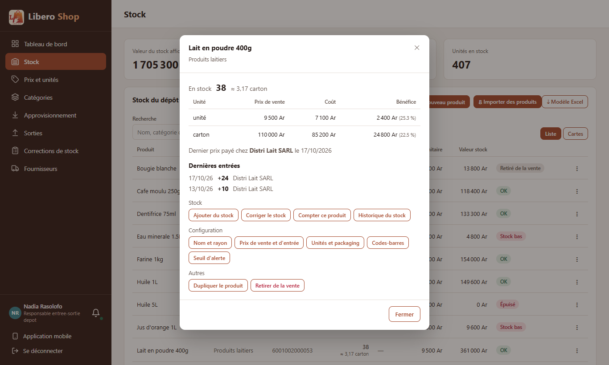
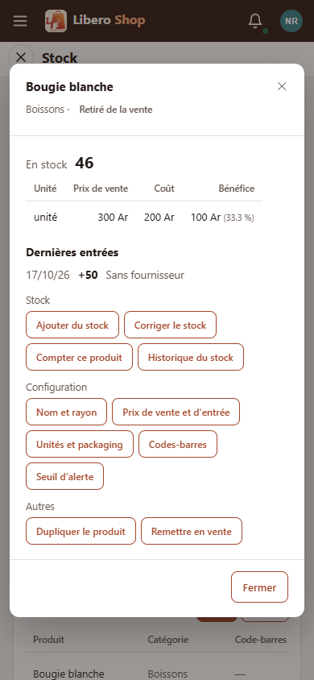

← Tous les comptes rendus de l'interface
UI-03Fiche rapide d'un produit
Résumé
- Dans les listes de stock (tableau ou cartes), toucher le nom d'un produit ouvre sa fiche rapide.
- La fiche se lit sans rien modifier : stock (avec son équivalent en carton), prix de vente, coût et bénéfice par unité, dernier prix payé et chez qui, les trois dernières entrées.
- Les actions du « ⋮ » y sont reprises en boutons, rangés par famille (Stock, Configuration, Autres) : plus faciles à viser au téléphone.
- Un bouton remplace la fiche par la fenêtre demandée, exactement comme depuis le « ⋮ ».
1. Le problème
Pour savoir combien rapporte un produit ou quand il a été livré pour la dernière fois, il fallait ouvrir sa configuration (onglet Prix) puis son historique : deux fenêtres pour une question simple. Et sur téléphone, le petit « ⋮ » est difficile à toucher.
2. Ce qui a été fait
Figure 1 — Le nom ouvre la fiche ; un bouton de la fiche ouvre la fenêtre voulue à sa place.
Les boutons sont ceux du menu du compte connecté : un compte qui ne peut pas recevoir de marchandise n'a pas « Ajouter du stock ». Les chiffres viennent des mêmes calculs que la page Bénéfices et l'historique du stock.
3. Le résultat en images
Nadia — responsable de dépôt

Figure 2 — Lait en poudre : 38 en stock (≈ 3,17 cartons), bénéfice par unité et par carton, deux dernières livraisons.

Figure 3 — Sur téléphone : de grands boutons à la place du petit « ⋮ », sans défilement de côté.
4. Tableau récapitulatif
| Fichier | Changement |
|---|---|
ui/…/shared/components/product-overview-dialog.component.ts | nouveau : la fiche rapide |
ui/…/core/catalog/product-overview.ts | nouveau : dernières entrées, rangées de boutons par famille |
ui/…/core/catalog/product-rights.ts, product-dialogs.component.ts | nouvelle demande « fiche rapide » |
ui/…/shared/components/stock-table.component.ts, product-card.component.ts | le nom du produit ouvre la fiche (listes de gestion seulement) |
| Règle | Test |
|---|---|
| Les trois dernières entrées seulement, ventes et corrections écartées | product-overview.spec.ts |
| Une rangée de boutons par famille, dans l'ordre du menu | |
| Aucun droit : aucune rangée |
Tests : interface au vert (297 tests). Aucun changement côté serveur.